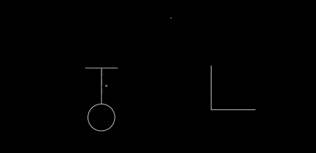

By Michael Nielsen. September 2017.
Rough working notes written as part of a (possible) series focused on improving my understanding of interfaces, broadly construed. Very rapidly written, focused on minutiae and rather long-winded at some points, overly abbreviated at others. May contain errors and misunderstandings. Caveat emptor!
The following notes discuss Ken Perlin's Chalktalk system.
Chalktalk is a magical interactive blackboard. The user can sketch more than 250 objects on the blackboard. Those objects are known as glyphs. The sketching may be done using a mouse inside a web browser. Chalktalk recognizes the glyphs, and they come to life: they can have dynamical behaviour, they can interact with one another, or be combined. Each glyph can have an interface. You can get the flavour by watching the final section of the following talk by Perlin:
Note that Chalktalk is not publicly available as I write (September 2017), so I cannot link to the system.
I've seen Perlin live demo the system two or three times.
It's a fascinating experience.
There is a sense of power, of the user (Perlin) being able to explore in interesting ways, to ask and answer questions that other people – including the creator (also largely Perlin) – have not anticipated. And so Chalktalk is a medium for thinking and exploring. What's more, the range of expression seems markedly different from existing cognitive technologies. It enables us to explore in genuinely new ways. In that sense, the system is a cognitive technology enabling us to express previously unthinkable thoughts.
Of course, carefully sculpted demos can be misleading. In the demos I saw, Perlin overcame this, to some extent, by quickly leaving the scripted part, and going to audience questions. In that mode, he appeared able to improvise interesting answers.
I say “to some extent” because it's possible to use pre-scripted material even while answering questions. In preparing these notes I watched several different talks by Perlin, and in each talk he used Chalktalk in similar ways. This makes me wonder how flexible the system really is.
(I have Chalktalk running on my machine, but have not mastered the interface well enough to have a good sense of its power. The system is a prototype, and unsurprisingly doesn't appear to have been optimized for other people to learn. Per Sartre, hell is other people's prototype interfaces.)
Compare to YouTube: It's fascinating to compare Chalktalk to high-quality YouTube channels. For instance, Grant Sanderson has a beautiful channel where he explains mathematical ideas, e.g., his explanation of the Riemann zeta function:
Sanderson's videos are extremely carefully prepared and improved through many iterations. Think of them as carefully crafted gems, polished to a brilliant sheen.
Chalktalk, by contrast, is interactive and improvisational. It's for exploration, for thinking with, individually and perhaps even collectively. It's roughness reflects the messy process of exploration and discovery.
As such, if you used a Chalktalk-like system to prepare videos, the results would be “lower quality” than videos like Sanderson's. It's not optimized for such relatively high production values.
That said, there is great pedagogic value in working a problem through in front of someone else, with all the messy exploration that entails. Much of my writing is discovery fiction** A good example, one of many, is How the Bitcoin protocol actually works., where I present a fictionalized process of discovery. Such pieces usually start with very rough and simple ideas, and then slowly and iteratively improve those ideas. The point isn't for the reader just to know what is true, but also to understand deeply why things are true. I think it likely that there would be value in using a Chalktalk-like system to prepare video-based discovery fiction.
The timescale of thought: the performative and improvisational nature of Chalktalk: Something I've heard Perlin emphasize is that Chalktalk is essentially performative and improvisational. This struck me as very important, but I was blocked for a long time on why it was important.
Here's a sketch of an argument for why this matters.
Let us take as given the Vygotskyesque point that our thoughts are internalizations of technologies we find in the external world. E.g., we internalize language, we internalize mathematical notation, we internalize interfaces, and so on. We use those internalizations as part of our thought: they are composable in various ways; we learn idioms and heuristics which rely on the internalizations; and we learn how to plan with those internalizations.
It seems to me that we internalize two different types of technology: objects and operations. In language, these correspond roughly to noun phrases and verb phrases. In painting, we may internalize many different stylistic effects (say, the swirls in Starry Night); we may also internalize many different operations we can do with a brush** By comparison with painting, there's an extreme poverty to standard computer interfaces: they are much less expressive of operations than our full body allows. Most operations are expressed with point-and-click, using the mouse, and key combinations. Contrast to the extraordinary range of operations a painter or dancer or tennis player etc learns to perform! The result is that many things which would be richer as operations are turned, at least in part, into objects, a process akin to nominalization in language. We don't so much paint in a drawing program as we select the paint icon, and then move the mouse pointer in ways impoverished compared to the rich ways a painter uses a brush..
It seems to me that there is an intrinsic timescale to the operations we internalize. If something happens too fast it becomes very difficult to internalize. This can, to some extent, be overcome through extensive practice – a top tennis player can think much more quickly about what's happening on a court than can other people. But that ability is limited.
The reverse is also true. When an operation is too slow our minds are poorly adapted to internalizing it.
Engelbart makes this point with his demonstration of the effect of adding a brick to a pencil, making it much slower (and also more difficult in other ways) to operate:
I conjecture that our minds are best adapted to internalize operations which take between a few tenths of a second and a few seconds. Shorter than that and we lack the acuity to easily internalize the operations. Longer than that and we no longer perceive the operation as a single unitary thing. Instead, we get bored and distracted, or start to break the operations down into parts.
In other words, there is a sweet spot for internalizing operations: they must be performable on a timescale of no longer than a few seconds. That is, there is a natural speed of thought, and what we internalize must match this speed.
Chalktalk matches this timescale well.
With that said, we can learn operations which take longer than that. Think of early computer scientists running batch jobs that might take hours or days. However, we do not internalize such operations as vividly or deeply as operations we can carry out over a few seconds. We don't “think” with such operations in the same way; they're more like Engelbart's brick.
To put it another way, thinking is essentially a real-time, performative, improvisational act, and this is a consequence of our basic physiology: the process of internalization works best for operations that take place at the speed of thought.
For embodied cognition this is perhaps especially true. There are considerable limitations on a ballet dancer's ability to slow down or speed up: the operations they can perform often have sharply defined intrinsic timescales. Martha Graham at 50 percent or 200 percent speed could no longer do much of what Martha Graham did** A related note: in an anecdote told by the writer Timothy Ferris in his book “Coming of Age in the Milky Way”, the football commentator John Madden once said of the quarterback Joe Montana: “With most guys, it's ‘I see. I step. I throw.’ With Montana it's ‘I seestepthrow.’ ”.
In Inventing on Principle, Bret Victor explores the principle that “creators need an immediate connection to what they create”. Many of his ideas make acts which were formerly complex and involved multiple stages into single, rapid operations. No longer do you edit the program, wait-while-recompiling, run the program, switch windows, observe, then switch back and edit again. Rather, you can directly experiment with many possible edits to the program, and see the effects interactively, in real time. Although the effect is the same as the edit-wait-switch-etc cycle, it forms a single mental operation in a way that edit-wait-switch-etc does not. And you begin to think with that operation in ways much harder with the edit-wait-switch-etc agglomerate.
Dynamic updating: After recognition, the glyphs can still be modified. Consider the way Perlin changes the length of the pendulum:

You can imagine many other operations (many of these are available in Chalktalk): resizing the whole glyph, changing the mass, changing the amplitude of oscillation, applying a driving or damping operation, and so on. In particular, we should have complete control over the static properties of the pendulum, we should (perhaps) be able to modify the dynamical model (say, changing the gravitational field so it is no longer uniform), we should be able to couple it to other systems, and we should have immediate connections to other deep ideas. That could mean, for instance, energy surfaces and conservation of energy, as in my prototype. Or something like Louiville's theorem. For a driven pendulum, it could mean connecting to the KAM theorem, perhaps showing the gradual breakdown of the islands of stability in the Poincare section as driving is increased. Or Lyapunov exponents. And so on. Every deep idea of mechanics suggests many ideas for interfaces to incorporate.
That sounds interesting, but also might it be rather complex. One does wonder if learning the interface wouldn't be as or more difficult than learning the subject in conventional static form?
I don't think so.
Two things would make it both easier and more powerful than the conventional static presentation. First, if elements of the interface are easily discoverable, then that would make it easy to find connections to energy surfaces, Poincare sections, the KAM theorem, and so on. Second, there would be reusable abstractions in the interface: things like energy conservation and Liouville's theorem would show up repeatedly in similar ways, in connection to very different systems. So once a user had understood the power of such ideas in one situation, they could begin to apply those same powerful ideas in other situations.
Many independently developed Chalktalks: When I talk with programmers about Chalktalk, many express skepticism, and tell me things like “We know visual programming doesn't work”. Maybe visual programming doesn't work. But it seems to me that we've had tens of thousands of people put enormous effort into developing conventional languages – things like Lisp and C and Python and so on. As far as I know we simply haven't put comparable effort and ingenuity into developing visual programming languages. And so it shouldn't be surprising that visual programming languages haven't been, in many respects, as successful. It seems to me that what's needed is a lot of people to seriously explore many different approaches in this vein.
I'm interested in taking at least a small stab at this problem. I have a few starting notes on implementation below.
I've heard Perlin make an interesting remark in this connection. An audience member asked the “don't we know visual programming languages don't work” question. He replied that he didn't expect Chalktalk to be good at the same things as Python etc. Rather, it was addressing an entirely different set of questions, aiming at understanding particular types of systems – things like the pendulum and other simple mechanical systems, electric circuits, computer graphics primitives, and so on. I like that framing, since it suggests many new questions that wouldn't occur to you if you thought Chalktalk was intened to solve the same set of problems as Python or C++. One way of framing this – a framing I dislike, but easily understood by many programmers – is that Chalktalk's goal isn't to be a general-purpose language, but rather is about understanding systems like pendula, circuits, and so on.
I don't like this framing, mostly because I dislike much of the baggage coming with the notion of “general-purpose programming languages”. Python, C etc are not general purpose. They're terrible at solving all sorts of problems which are better solved using other programming paradigms. If you want to solve an image recognition problem, you want to use a neural net, not Python. Some people reply to this saying “Oh, but isn't your neural net implemented in Python?” To which the answer is: no, all the important design decisions are taking place at a level of abstraction which has nothing to do with Python; Python is unimportant glue. Programming languages like Python etc aren't general purpose. Rather, for years they were all we had, and so people eventually started to confuse Python etc with what computers can easily do. But with radically different abstractions – like neural nets – we can easily solve problems which are very hard to directly solve in so-called general-purpose programming languages.
Rant over.
For what purpose might I develop a system like this? Four uses come to mind: teaching; giving talks (good for more improvisational talks!); YouTube (good for discovery fiction); collaboration (very demanding, since my collaborators would hate it unless it was really good).
Historical origin: I'm attributing a great deal to Chalktalk. In fact, many of the ideas in Chalktalk have their origins in other work, especially work on visual programming languages. I have limited familiarity with that work, though. So when I say an idea has its origins in Chalktalk, I really mean it has its origin in Chalktalk and its many ancestors.
As I imagine implementing a system similar to this, many puzzles come to mind. Let me make a few observations:
I wondered at first if each glyph was a single stroke. It would be convenient for implementation purposes if so: you could wait for a mouseup event and then try to recognize the glyph. But in the Perlin video you can see examples where a glyph involves multiple strokes. So that's not what's going on.
I think what's going on is something like the following:
recognition = false
do until recognition
wait until mousedown
if no bounding box, initialize bounding box
do until mouseup
update image
update bounding box
rescale the material that's been added inside
if we recognize the material:
delete image from canvas
add the appropriate iconic representation
recognition = true
That's pretty good. It has a number of problems and ways in which it is incomplete. But it's a good first attempt.
As sketched, the system tries to recognize the shape each time a stroke is finished. A different way would be to allow free-form sketching, and then for the user to say when they wanted recognition to be applied, e.g., by hitting a key – say, “r”.
(Note, by the way, that for the purposes of automated recognition there's some notion of objects being prefix-free, along lines similar to prefix-free codes in coding theory.)
How to do the recognition step? A simple initial approach would be:
rescale image to a standard bounding box for each target glyph compute distance to rescaled image, using \ standard Euclidean metric on images return target glyph which is closest
In storing an internal representation, one probably wants a list of bounding boxes, and an order, from back to front. So the very first glyph would be at the back, the second glyph second from the back, and so on. This order (which might be mutable) would be used to control the system.
This system could be, at a guess, quickly implemented. (Of course, it needs to be sketched out in quite a bit more detail!) One would want to test how well this approach to glyph recognition worked, and see if it's actually going to be practical – it'd be good to find out quickly if it's not going to be a practical approach to recognizing the glyphs, so I could experiment with other approaches.
Over the long run, one would want to replace the above by a better approach to recognition, possibly one based on machine learning. It might be particularly fun if the system could gradually retrain itself, learning to recognize glyphs as users actually draw them, rather than idealized versions. One could even imagine the shape of the glyphs evolving socially over time, just as language evolves.
At this point, I'm keen enough to want to pursue a 10-20 hour project implementing a toy system. To do that, I'd probably need to (a) explore several ideas for how the interface might look, and the stories I might tell, perhaps for a short YouTube video; (b) to sketch out how such a system would be implemented; (c) implement the system; (d) script my video; and (e) record my video.
For the basic story, I can imagine exploring things like the pendulum, the driven pendulum, the connection to and differences from springs, abstracting away to configuration and other spaces, energy surfaces, chaos and driving. There are some fun tricks one might try: e.g., adding a butterfly-and-weather glyph, and so on, just to emphasize the expressiveness of the system.
Another basic story might be about gravitation, how the tides arise, the orbits of the planets, precession in GR, the bending of light, black holes, why different laws of gravitation give us closed orbits or do not, and so on.
Another basic story might be about trajectories.
I won't try to flesh these out here, I'm simply jotting them down as a starting point for a different design document.
On the more technical side, I can imagine thinking about questions like: could we incorporate Wekinator-like ideas; could we incorporate sketch-RNN; could we integrate machine learning in some other way; what can we learn from Scratch; what can we learn from Nicky Case's examples?
All good questions! This will be a fun followup project.